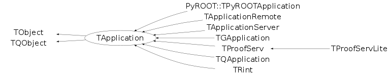

class TApplication: public TObject, public TQObject
TApplication This class creates the ROOT Application Environment that interfaces to the windowing system eventloop and eventhandlers. This class must be instantiated exactly once in any given application. Normally the specific application class inherits from TApplication (see TRint).
Function Members (Methods)
public:
| TApplication(const char* appClassName, Int_t* argc, char** argv, void* options = 0, Int_t numOptions = 0) | |
| virtual | ~TApplication() |
| void | TObject::AbstractMethod(const char* method) const |
| virtual void | TObject::AppendPad(Option_t* option = "") |
| virtual const char* | ApplicationName() const |
| static Bool_t | TQObject::AreAllSignalsBlocked() |
| Bool_t | TQObject::AreSignalsBlocked() const |
| Int_t | Argc() const |
| char** | Argv() const |
| char* | Argv(Int_t index) const |
| static Bool_t | TQObject::BlockAllSignals(Bool_t b) |
| Bool_t | TQObject::BlockSignals(Bool_t b) |
| virtual void | TObject::Browse(TBrowser* b) |
| virtual void | TQObject::ChangedBy(const char* method)SIGNAL |
| static TClass* | Class() |
| virtual const char* | TObject::ClassName() const |
| virtual void | TObject::Clear(Option_t* = "") |
| void | ClearInputFiles() |
| virtual TObject* | TObject::Clone(const char* newname = "") const |
| void | TQObject::CollectClassSignalLists(TList& list, TClass* cls) |
| virtual Int_t | TObject::Compare(const TObject* obj) const |
| Bool_t | TQObject::Connect(const char* signal, const char* receiver_class, void* receiver, const char* slot) |
| static Bool_t | TQObject::Connect(TQObject* sender, const char* signal, const char* receiver_class, void* receiver, const char* slot) |
| static Bool_t | TQObject::Connect(const char* sender_class, const char* signal, const char* receiver_class, void* receiver, const char* slot) |
| virtual void | TQObject::Connected(const char*) |
| virtual void | TObject::Copy(TObject& object) const |
| static void | CreateApplication() |
| virtual void | TObject::Delete(Option_t* option = "")MENU |
| virtual void | TQObject::Destroyed()SIGNAL |
| Bool_t | TQObject::Disconnect(const char* signal = 0, void* receiver = 0, const char* slot = 0) |
| static Bool_t | TQObject::Disconnect(TQObject* sender, const char* signal = 0, void* receiver = 0, const char* slot = 0) |
| static Bool_t | TQObject::Disconnect(const char* class_name, const char* signal, void* receiver = 0, const char* slot = 0) |
| virtual void | TQObject::Disconnected(const char*) |
| virtual Int_t | TObject::DistancetoPrimitive(Int_t px, Int_t py) |
| virtual void | TObject::Draw(Option_t* option = "") |
| virtual void | TObject::DrawClass() constMENU |
| virtual TObject* | TObject::DrawClone(Option_t* option = "") constMENU |
| virtual void | TObject::Dump() constMENU |
| void | TQObject::Emit(const char* signal) |
| void | TQObject::Emit(const char* signal, Long_t* paramArr) |
| void | TQObject::Emit(const char* signal, const char* params) |
| void | TQObject::Emit(const char* signal, Double_t param) |
| void | TQObject::Emit(const char* signal, Long_t param) |
| void | TQObject::Emit(const char* signal, Long64_t param) |
| void | TQObject::Emit(const char* signal, Bool_t param) |
| void | TQObject::Emit(const char* signal, Char_t param) |
| void | TQObject::Emit(const char* signal, UChar_t param) |
| void | TQObject::Emit(const char* signal, Short_t param) |
| void | TQObject::Emit(const char* signal, UShort_t param) |
| void | TQObject::Emit(const char* signal, Int_t param) |
| void | TQObject::Emit(const char* signal, UInt_t param) |
| void | TQObject::Emit(const char* signal, ULong_t param) |
| void | TQObject::Emit(const char* signal, ULong64_t param) |
| void | TQObject::Emit(const char* signal, Float_t param) |
| void | TQObject::EmitVA(const char* signal, Int_t nargs) |
| void | TQObject::EmitVA(const char* signal, Int_t nargs, va_list va) |
| virtual void | TObject::Error(const char* method, const char* msgfmt) const |
| virtual void | TObject::Execute(const char* method, const char* params, Int_t* error = 0) |
| virtual void | TObject::Execute(TMethod* method, TObjArray* params, Int_t* error = 0) |
| virtual void | TObject::ExecuteEvent(Int_t event, Int_t px, Int_t py) |
| static Long_t | ExecuteFile(const char* file, Int_t* error = 0, Bool_t keep = kFALSE) |
| TApplication::EExitOnException | ExitOnException(TApplication::EExitOnException opt = kExit) |
| virtual void | TObject::Fatal(const char* method, const char* msgfmt) const |
| virtual TObject* | TObject::FindObject(const char* name) const |
| virtual TObject* | TObject::FindObject(const TObject* obj) const |
| virtual TApplicationImp* | GetApplicationImp() |
| static TList* | GetApplications() |
| TApplication* | GetAppRemote() const |
| virtual Option_t* | TObject::GetDrawOption() const |
| static Long_t | TObject::GetDtorOnly() |
| virtual const char* | TObject::GetIconName() const |
| const char* | GetIdleCommand() const |
| TList* | TQObject::GetListOfClassSignals() const |
| TList* | TQObject::GetListOfConnections() const |
| TList* | TQObject::GetListOfSignals() const |
| virtual const char* | TObject::GetName() const |
| virtual char* | TObject::GetObjectInfo(Int_t px, Int_t py) const |
| static Bool_t | TObject::GetObjectStat() |
| virtual Option_t* | TObject::GetOption() const |
| virtual void | GetOptions(Int_t* argc, char** argv) |
| TSignalHandler* | GetSignalHandler() const |
| virtual const char* | TObject::GetTitle() const |
| virtual UInt_t | TObject::GetUniqueID() const |
| virtual void | HandleException(Int_t sig) |
| virtual void | HandleIdleTimer()SIGNAL |
| virtual Bool_t | HandleTermInput() |
| virtual Bool_t | TObject::HandleTimer(TTimer* timer) |
| virtual Bool_t | TQObject::HasConnection(const char* signal_name) const |
| virtual ULong_t | TObject::Hash() const |
| virtual void | Hide() |
| virtual void | TQObject::HighPriority(const char* signal_name, const char* slot_name = 0) |
| virtual void | Iconify() |
| virtual void | TObject::Info(const char* method, const char* msgfmt) const |
| virtual Bool_t | TObject::InheritsFrom(const char* classname) const |
| virtual Bool_t | TObject::InheritsFrom(const TClass* cl) const |
| virtual void | Init() |
| void | InitializeGraphics() |
| TObjArray* | InputFiles() const |
| virtual void | TObject::Inspect() constMENU |
| void | TObject::InvertBit(UInt_t f) |
| virtual TClass* | IsA() const |
| virtual Bool_t | IsCmdThread() |
| virtual Bool_t | TObject::IsEqual(const TObject* obj) const |
| virtual Bool_t | TObject::IsFolder() const |
| Bool_t | TObject::IsOnHeap() const |
| Bool_t | IsRunning() const |
| virtual Bool_t | TObject::IsSortable() const |
| Bool_t | TObject::IsZombie() const |
| virtual void | KeyPressed(Int_t key)SIGNAL |
| virtual void | LineProcessed(const char* line)SIGNAL |
| static void | TQObject::LoadRQ_OBJECT() |
| virtual void | Lower() |
| virtual void | TQObject::LowPriority(const char* signal_name, const char* slot_name = 0) |
| virtual void | ls(Option_t* option = "") const |
| void | TObject::MayNotUse(const char* method) const |
| virtual void | TQObject::Message(const char* msg)SIGNAL |
| static void | NeedGraphicsLibs() |
| Bool_t | NoLogoOpt() const |
| Bool_t | NoLogOpt() const |
| virtual Bool_t | TObject::Notify() |
| virtual Int_t | TQObject::NumberOfConnections() const |
| virtual Int_t | TQObject::NumberOfSignals() const |
| void | TObject::Obsolete(const char* method, const char* asOfVers, const char* removedFromVers) const |
| virtual void | Open() |
| static void | TObject::operator delete(void* ptr) |
| static void | TObject::operator delete(void* ptr, void* vp) |
| static void | TObject::operator delete[](void* ptr) |
| static void | TObject::operator delete[](void* ptr, void* vp) |
| void* | TObject::operator new(size_t sz) |
| void* | TObject::operator new(size_t sz, void* vp) |
| void* | TObject::operator new[](size_t sz) |
| void* | TObject::operator new[](size_t sz, void* vp) |
| virtual void | TObject::Paint(Option_t* option = "") |
| virtual void | TObject::Pop() |
| virtual void | TObject::Print(Option_t* option = "") const |
| virtual Long_t | ProcessFile(const char* file, Int_t* error = 0, Bool_t keep = kFALSE) |
| virtual Long_t | ProcessLine(const char* line, Bool_t sync = kFALSE, Int_t* error = 0) |
| Bool_t | QuitOpt() const |
| virtual void | Raise() |
| virtual Int_t | TObject::Read(const char* name) |
| virtual void | TObject::RecursiveRemove(TObject* obj) |
| virtual void | RemoveIdleTimer() |
| void | TObject::ResetBit(UInt_t f) |
| Bool_t | ReturnFromRun() const |
| virtual void | ReturnPressed(char* text)SIGNAL |
| virtual void | Run(Bool_t retrn = kFALSE) |
| virtual void | TObject::SaveAs(const char* filename = "", Option_t* option = "") constMENU |
| virtual void | TObject::SavePrimitive(ostream& out, Option_t* option = "") |
| void | TObject::SetBit(UInt_t f) |
| void | TObject::SetBit(UInt_t f, Bool_t set) |
| virtual void | TObject::SetDrawOption(Option_t* option = "")MENU |
| static void | TObject::SetDtorOnly(void* obj) |
| virtual void | SetEchoMode(Bool_t mode) |
| virtual void | SetIdleTimer(UInt_t idleTimeInSec, const char* command) |
| static void | TObject::SetObjectStat(Bool_t stat) |
| void | SetReturnFromRun(Bool_t ret) |
| virtual void | TObject::SetUniqueID(UInt_t uid) |
| virtual void | Show() |
| virtual void | ShowMembers(TMemberInspector& insp) |
| virtual void | StartIdleing() |
| virtual void | StopIdleing() |
| virtual void | Streamer(TBuffer& b) |
| void | StreamerNVirtual(TBuffer& b) |
| virtual void | TObject::SysError(const char* method, const char* msgfmt) const |
| virtual Int_t | TabCompletionHook(char* buf, int* pLoc, ostream& out) |
| virtual void | Terminate(Int_t status = 0)SIGNAL |
| Bool_t | TObject::TestBit(UInt_t f) const |
| Int_t | TObject::TestBits(UInt_t f) const |
| virtual void | TObject::UseCurrentStyle() |
| virtual void | TObject::Warning(const char* method, const char* msgfmt) const |
| const char* | WorkingDirectory() const |
| virtual Int_t | TObject::Write(const char* name = 0, Int_t option = 0, Int_t bufsize = 0) |
| virtual Int_t | TObject::Write(const char* name = 0, Int_t option = 0, Int_t bufsize = 0) const |
protected:
| TApplication() | |
| static Int_t | TQObject::CheckConnectArgs(TQObject* sender, TClass* sender_class, const char* signal, TClass* receiver_class, const char* slot) |
| static void | Close(TApplication* app) |
| static Bool_t | TQObject::ConnectToClass(TQObject* sender, const char* signal, TClass* receiver_class, void* receiver, const char* slot) |
| static Bool_t | TQObject::ConnectToClass(const char* sender_class, const char* signal, TClass* receiver_class, void* receiver, const char* slot) |
| virtual void | TObject::DoError(int level, const char* location, const char* fmt, va_list va) const |
| virtual void* | TQObject::GetSender() |
| virtual const char* | TQObject::GetSenderClassName() const |
| virtual void | Help(const char* line) |
| virtual void | LoadGraphicsLibs() |
| virtual void | MakeBatch() |
| void | TObject::MakeZombie() |
| static TApplication* | Open(const char* url, Int_t debug, const char* script) |
| static Int_t | ParseRemoteLine(const char* ln, TString& hostdir, TString& user, Int_t& dbg, TString& script) |
| virtual Long_t | ProcessRemote(const char* line, Int_t* error = 0) |
| void | SetSignalHandler(TSignalHandler* sh) |
private:
| TApplication(const TApplication&) | |
| TApplication& | operator=(const TApplication&) |
Data Members
public:
| enum EStatusBits { | kProcessRemotely | |
| kDefaultApplication | ||
| }; | ||
| enum EExitOnException { | kDontExit | |
| kExit | ||
| kAbort | ||
| }; | ||
| enum TObject::EStatusBits { | kCanDelete | |
| kMustCleanup | ||
| kObjInCanvas | ||
| kIsReferenced | ||
| kHasUUID | ||
| kCannotPick | ||
| kNoContextMenu | ||
| kInvalidObject | ||
| }; | ||
| enum TObject::[unnamed] { | kIsOnHeap | |
| kNotDeleted | ||
| kZombie | ||
| kBitMask | ||
| kSingleKey | ||
| kOverwrite | ||
| kWriteDelete | ||
| }; |
protected:
| TApplication* | fAppRemote | Current remote application, if defined |
| TList* | TQObject::fListOfConnections | ! list of connections to this object |
| TList* | TQObject::fListOfSignals | ! list of signals from this object |
| Bool_t | TQObject::fSignalsBlocked | ! flag used for suppression of signals |
| static Bool_t | TQObject::fgAllSignalsBlocked | flag used for suppression of all signals |
| static TList* | fgApplications | List of available applications |
private:
| TApplicationImp* | fAppImp | !Window system specific application implementation |
| Int_t | fArgc | Number of com mand line arguments |
| char** | fArgv | Command line arguments |
| TApplication::EExitOnException | fExitOnException | Exit on exception option |
| TObjArray* | fFiles | Array of input files (TObjString's) specified via argv |
| TString | fIdleCommand | Command to execute while application is idle |
| TTimer* | fIdleTimer | Idle timer |
| Bool_t | fIsRunning | True when in event loop (Run() has been called) |
| Bool_t | fNoLog | Do not process logon and logoff macros |
| Bool_t | fNoLogo | Do not show splash screen and welcome message |
| Bool_t | fQuit | Exit after having processed input files |
| Bool_t | fReturnFromRun | When true return from Run() |
| TSignalHandler* | fSigHandler | Interrupt handler |
| Bool_t | fUseMemstat | Run with TMemStat enabled |
| TString | fWorkDir | Working directory specified via argv |
| static Bool_t | fgGraphInit | True if graphics libs initialized |
| static Bool_t | fgGraphNeeded | True if graphics libs need to be initialized |
Class Charts
{kind=link}
{kind=link}
{kind=link}
{kind=link}

Function documentation
TApplication(const char* appClassName, Int_t* argc, char** argv, void* options = 0, Int_t numOptions = 0)
Create an application environment. The application environment provides an interface to the graphics system and eventloop (be it X, Windoze, MacOS or BeOS). After creating the application object start the eventloop by calling its Run() method. The command line options recogized by TApplication are described in the GetOptions() method. The recognized options are removed from the argument array. The original list of argument options can be retrieved via the Argc() and Argv() methods. The appClassName "proofserv" is reserved for the PROOF system. The "options" and "numOptions" arguments are not used, except if you want to by-pass the argv processing by GetOptions() in which case you should specify numOptions<0. All options will still be available via the Argv() method for later use.
void NeedGraphicsLibs()
Static method. This method should be called from static library initializers if the library needs the low level graphics system.
void ClearInputFiles()
void GetOptions(Int_t* argc, char** argv)
Get and handle command line options. Arguments handled are removed
from the argument array. The following arguments are handled:
-b : run in batch mode without graphics
-x : exit on exception
-n : do not execute logon and logoff macros as specified in .rootrc
-q : exit after processing command line macro files
-l : do not show splash screen
The last three options are only relevant in conjunction with TRint.
The following help and info arguments are supported:
-? : print usage
-h : print usage
--help : print usage
-config : print ./configure options
-memstat : run with memory usage monitoring
In addition to the above options the arguments that are not options,
i.e. they don't start with - or + are treated as follows (and also removed
from the argument array):
<dir> is considered the desired working directory and available
via WorkingDirectory(), if more than one dir is specified the
first one will prevail
<file> if the file exists its added to the InputFiles() list
<file>.root are considered ROOT files and added to the InputFiles() list,
the file may be a remote file url
<macro>.C are considered ROOT macros and also added to the InputFiles() list
In TRint we set the working directory to the <dir>, the ROOT files are
connected, and the macros are executed. If your main TApplication is not
TRint you have to decide yourself what to do whith these options.
All specified arguments (also the ones removed) can always be retrieved
via the TApplication::Argv() method.
void HandleIdleTimer()
Handle idle timeout. When this timer expires the registered idle command will be executed by this routine and a signal will be emitted.
void HandleException(Int_t sig)
Handle exceptions (kSigBus, kSigSegmentationViolation, kSigIllegalInstruction and kSigFloatingException) trapped in TSystem. Specific TApplication implementations may want something different here.
void LoadGraphicsLibs()
Int_t ParseRemoteLine(const char* ln, TString& hostdir, TString& user, Int_t& dbg, TString& script)
Parse the content of a line starting with ".R" (already stripped-off) The format is [user@]host[:dir] [-l user] [-d dbg] [script] The variable 'dir' is the remote directory to be used as working dir. The username can be specified in two ways, "-l" having the priority (as in ssh). A 'dbg' value > 0 gives increasing verbosity. The last argument 'script' allows to specify an alternative script to be executed remotely to startup the session.
Long_t ProcessRemote(const char* line, Int_t* error = 0)
Process the content of a line starting with ".R" (already stripped-off) The format is [user@]host[:dir] [-l user] [-d dbg] [script] | [host] -close The variable 'dir' is the remote directory to be used as working dir. The username can be specified in two ways, "-l" having the priority (as in ssh). A 'dbg' value > 0 gives increasing verbosity. The last argument 'script' allows to specify an alternative script to be executed remotely to startup the session.
Long_t ProcessLine(const char* line, Bool_t sync = kFALSE, Int_t* error = 0)
Process a single command line, either a C++ statement or an interpreter command starting with a ".". Return the return value of the command casted to a long.
Long_t ProcessFile(const char* file, Int_t* error = 0, Bool_t keep = kFALSE)
Process a file containing a C++ macro.
Long_t ExecuteFile(const char* file, Int_t* error = 0, Bool_t keep = kFALSE)
Execute a file containing a C++ macro (static method). Can be used while TApplication is not yet created.
void Run(Bool_t retrn = kFALSE)
Main application eventloop. Calls system dependent eventloop via gSystem.
void SetIdleTimer(UInt_t idleTimeInSec, const char* command)
Int_t TabCompletionHook(char* buf, int* pLoc, ostream& out)
void Terminate(Int_t status = 0)
Terminate the application by call TSystem::Exit() unless application has been told to return from Run(), by a call to SetReturnFromRun().
void SetEchoMode(Bool_t mode)
TApplication * Open(const char* url, Int_t debug, const char* script)
Static function used to attach to an existing remote application or to start one.
TApplication(const TApplication& )
TApplication& operator=(const TApplication& )
TApplication * Open(const char* url, Int_t debug, const char* script)